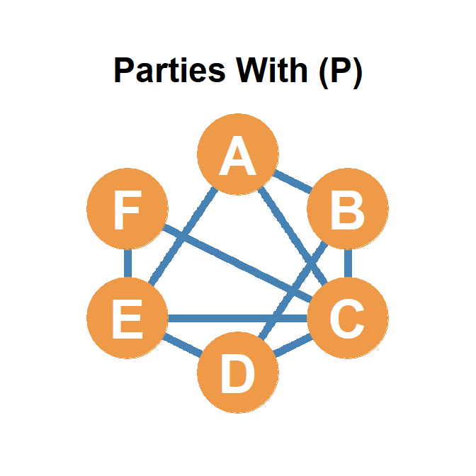
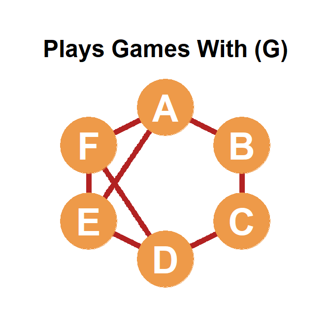
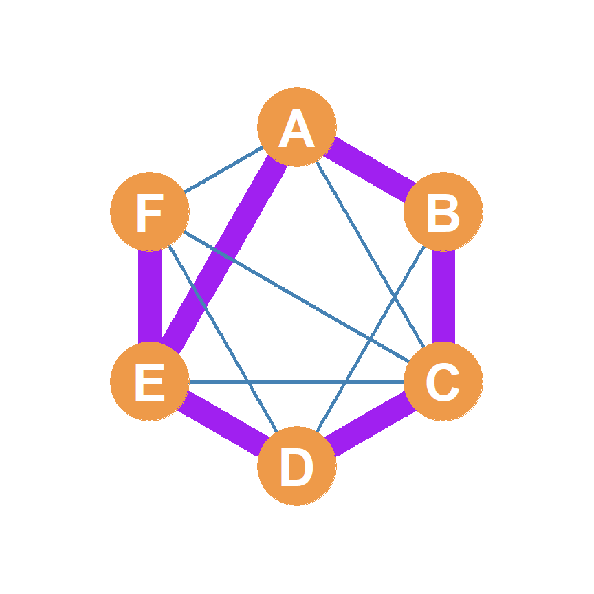
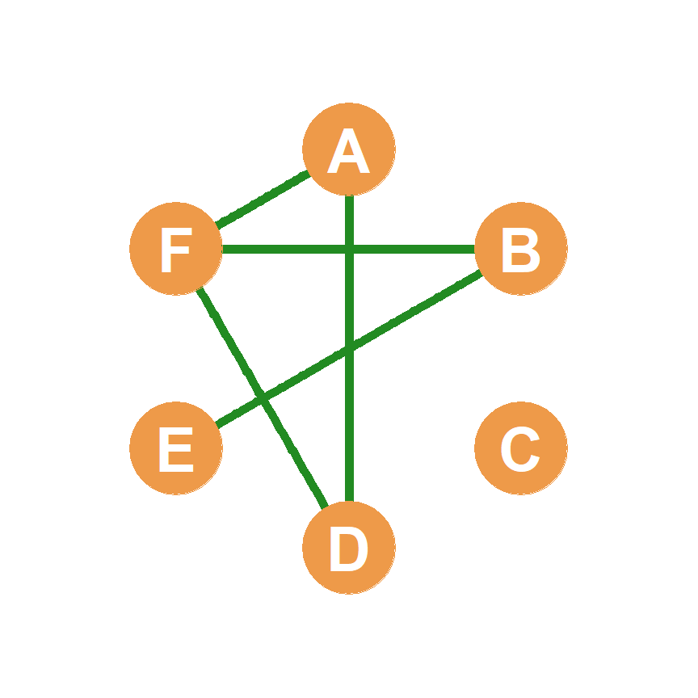
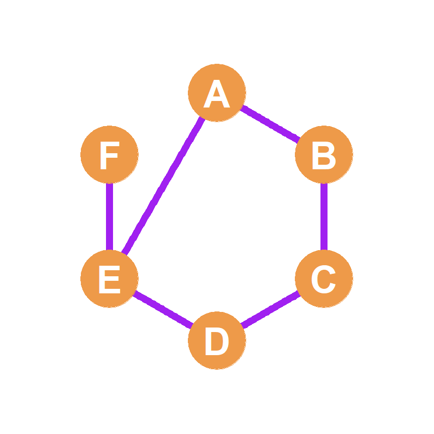
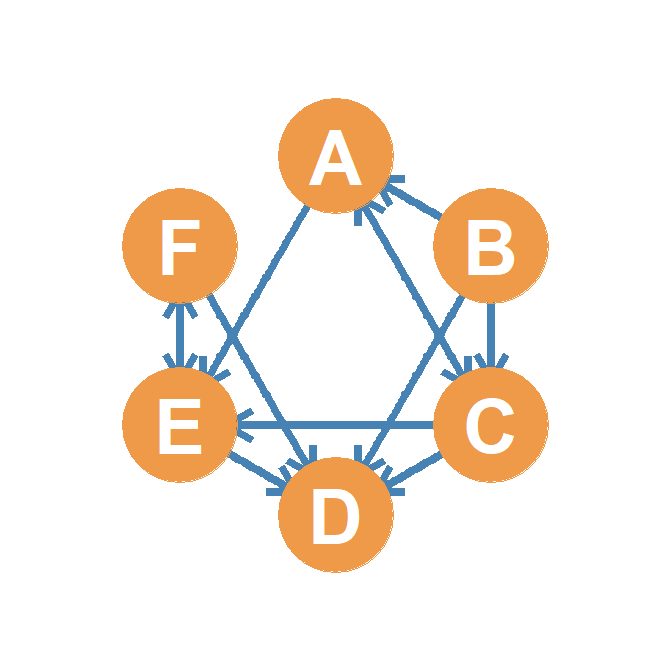
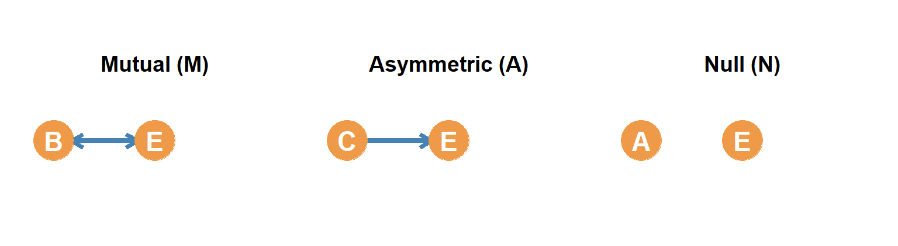
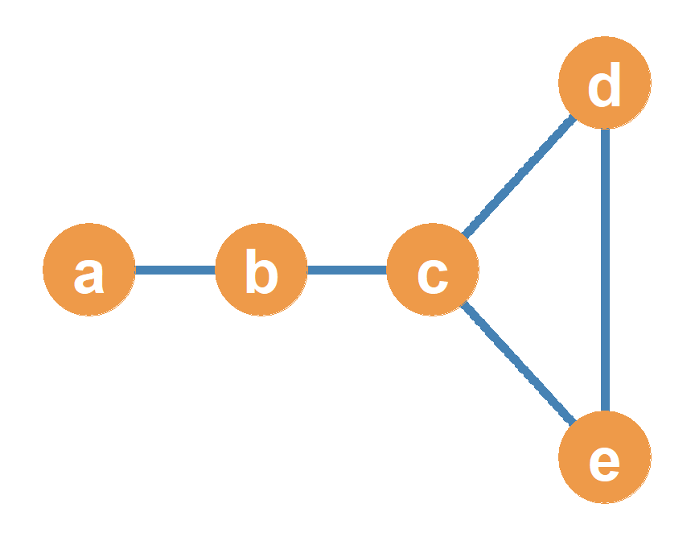
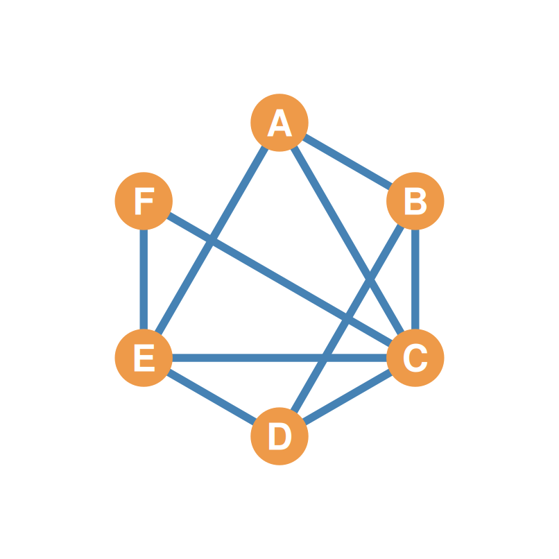

| A | B | C | D | E | F | |
|---|---|---|---|---|---|---|
| A | -- | 1 | 1 | 0 | 1 | 0 |
| B | 1 | -- | 1 | 1 | 0 | 0 |
| C | 1 | 1 | -- | 1 | 1 | 1 |
| D | 0 | 1 | 1 | -- | 1 | 0 |
| E | 1 | 0 | 1 | 1 | -- | 1 |
| F | 0 | 0 | 1 | 0 | 1 | -- |
Basic Operations, Conformability, and Matrix Multiplication
| A | B | C | D | E | F | |
|---|---|---|---|---|---|---|
| A | -- | 1 | 1 | 0 | 1 | 0 |
| B | 1 | -- | 1 | 1 | 0 | 0 |
| C | 1 | 1 | -- | 1 | 1 | 1 |
| D | 0 | 1 | 1 | -- | 1 | 0 |
| E | 1 | 0 | 1 | 1 | -- | 1 |
| F | 0 | 0 | 1 | 0 | 1 | -- |

| A | B | C | D | E | F | |
|---|---|---|---|---|---|---|
| A | -- | 1 | 0 | 0 | 1 | 1 |
| B | 1 | -- | 1 | 0 | 0 | 0 |
| C | 0 | 1 | -- | 1 | 0 | 0 |
| D | 0 | 0 | 1 | -- | 1 | 1 |
| E | 1 | 0 | 0 | 1 | -- | 1 |
| F | 1 | 0 | 0 | 1 | 1 | -- |

\[\mathbf{P} + \mathbf{G} = \begin{pmatrix} 0 & 1 & 1 & 0 & 1 & 0 \\ 1 & 0 & 1 & 1 & 0 & 0 \\ 1 & 1 & 0 & 1 & 1 & 1 \\ 0 & 1 & 1 & 0 & 1 & 0 \\ 1 & 0 & 1 & 1 & 0 & 1 \\ 0 & 0 & 1 & 0 & 1 & 0 \end{pmatrix} + \begin{pmatrix} 0 & 1 & 0 & 0 & 1 & 1 \\ 1 & 0 & 1 & 0 & 0 & 0 \\ 0 & 1 & 0 & 1 & 0 & 0 \\ 0 & 0 & 1 & 0 & 1 & 1 \\ 1 & 0 & 0 & 1 & 0 & 1 \\ 1 & 0 & 0 & 1 & 1 & 0 \end{pmatrix}\]
\[\mathbf{P} + \mathbf{G} = \begin{pmatrix} 0+0 & 1+1 & 1+0 & 0+0 & 1+1 & 0+1 \\ 1+1 & 0+0 & 1+1 & 1+0 & 0+0 & 0+0 \\ 1+0 & 1+1 & 0+0 & 1+1 & 1+0 & 1+0 \\ 0+0 & 1+0 & 1+1 & 0+0 & 1+1 & 0+1 \\ 1+1 & 0+0 & 1+0 & 1+1 & 0+0 & 1+1 \\ 0+1 & 0+0 & 1+0 & 0+1 & 1+1 & 0+0 \end{pmatrix} = \begin{pmatrix} 0 & \mathbf{2} & 1 & 0 & \mathbf{2} & 1 \\ \mathbf{2} & 0 & \mathbf{2} & 1 & 0 & 0 \\ 1 & \mathbf{2} & 0 & \mathbf{2} & 1 & 1 \\ 0 & 1 & \mathbf{2} & 0 & \mathbf{2} & 1 \\ \mathbf{2} & 0 & 1 & \mathbf{2} & 0 & \mathbf{2} \\ 1 & 0 & 1 & 1 & \mathbf{2} & 0 \end{pmatrix}\]
| A | B | C | D | E | F | |
|---|---|---|---|---|---|---|
| A | -- | 2 | 1 | 0 | 2 | 1 |
| B | 2 | -- | 2 | 1 | 0 | 0 |
| C | 1 | 2 | -- | 2 | 1 | 1 |
| D | 0 | 1 | 2 | -- | 2 | 1 |
| E | 2 | 0 | 1 | 2 | -- | 2 |
| F | 1 | 0 | 1 | 1 | 2 | -- |

\[\mathbf{1} - \mathbf{P} = 1 - \begin{pmatrix} - & 1 & 1 & 0 & 1 & 0 \\ 1 & - & 1 & 1 & 0 & 0 \\ 1 & 1 & - & 1 & 1 & 1 \\ 0 & 1 & 1 & - & 1 & 0 \\ 1 & 0 & 1 & 1 & - & 1 \\ 0 & 0 & 1 & 0 & 1 & - \end{pmatrix}\]
\[\mathbf{1} - \mathbf{P} = \begin{pmatrix} - & 1-1 & 1-1 & 1-0 & 1-1 & 1-0 \\ 1-1 & - & 1-1 & 1-1 & 1-0 & 1-0 \\ 1-1 & 1-1 & - & 1-1 & 1-1 & 1-1 \\ 1-0 & 1-1 & 1-1 & - & 1-1 & 1-0 \\ 1-1 & 1-0 & 1-1 & 1-1 & - & 1-1 \\ 1-0 & 1-0 & 1-1 & 1-0 & 1-1 & - \end{pmatrix} = \begin{pmatrix} - & 0 & 0 & 1 & 0 & 1 \\ 0 & - & 0 & 0 & 1 & 1 \\ 0 & 0 & - & 0 & 0 & 0 \\ 1 & 0 & 0 & - & 0 & 1 \\ 0 & 1 & 0 & 0 & - & 0 \\ 1 & 1 & 0 & 1 & 0 & - \end{pmatrix}\]$
| A | B | C | D | E | F | |
|---|---|---|---|---|---|---|
| A | -- | 0 | 0 | 1 | 0 | 1 |
| B | 0 | -- | 0 | 0 | 1 | 1 |
| C | 0 | 0 | -- | 0 | 0 | 0 |
| D | 1 | 0 | 0 | -- | 0 | 1 |
| E | 0 | 1 | 0 | 0 | -- | 0 |
| F | 1 | 1 | 0 | 1 | 0 | -- |

\[\mathbf{P} \circ \mathbf{G} = \begin{pmatrix} 0 & 1 & 1 & 0 & 1 & 0 \\ 1 & 0 & 1 & 1 & 0 & 0 \\ 1 & 1 & 0 & 1 & 1 & 1 \\ 0 & 1 & 1 & 0 & 1 & 0 \\ 1 & 0 & 1 & 1 & 0 & 1 \\ 0 & 0 & 1 & 0 & 1 & 0 \end{pmatrix} \circ \begin{pmatrix} 0 & 1 & 0 & 0 & 1 & 1 \\ 1 & 0 & 1 & 0 & 0 & 0 \\ 0 & 1 & 0 & 1 & 0 & 0 \\ 0 & 0 & 1 & 0 & 1 & 1 \\ 1 & 0 & 0 & 1 & 0 & 1 \\ 1 & 0 & 0 & 1 & 1 & 0 \end{pmatrix}\]
\[\mathbf{P} \circ \mathbf{G} = \begin{pmatrix} 0\times0 & 1\times1 & 1\times0 & 0\times0 & 1\times1 & 0\times1 \\ 1\times1 & 0\times0 & 1\times1 & 1\times0 & 0\times0 & 0\times0 \\ 1\times0 & 1\times1 & 0\times0 & 1\times1 & 1\times0 & 1\times0 \\ 0\times0 & 1\times0 & 1\times1 & 0\times0 & 1\times1 & 0\times1 \\ 1\times1 & 0\times0 & 1\times0 & 1\times1 & 0\times0 & 1\times1 \\ 0\times1 & 0\times0 & 1\times0 & 0\times1 & 1\times1 & 0\times0 \end{pmatrix} = \begin{pmatrix} 0 & \mathbf{1} & 0 & 0 & \mathbf{1} & 0 \\ \mathbf{1} & 0 & \mathbf{1} & 0 & 0 & 0 \\ 0 & \mathbf{1} & 0 & \mathbf{1} & 0 & 0 \\ 0 & 0 & \mathbf{1} & 0 & \mathbf{1} & 0 \\ \mathbf{1} & 0 & 0 & \mathbf{1} & 0 & \mathbf{1} \\ 0 & 0 & 0 & 0 & \mathbf{1} & 0 \end{pmatrix}\]
| A | B | C | D | E | F | |
|---|---|---|---|---|---|---|
| A | -- | 1 | 0 | 0 | 1 | 0 |
| B | 1 | -- | 1 | 0 | 0 | 0 |
| C | 0 | 1 | -- | 1 | 0 | 0 |
| D | 0 | 0 | 1 | -- | 1 | 0 |
| E | 1 | 0 | 0 | 1 | -- | 1 |
| F | 0 | 0 | 0 | 0 | 1 | -- |

| A | B | C | D | E | F | |
|---|---|---|---|---|---|---|
| A | -- | 0 | 1 | 0 | 1 | 0 |
| B | 1 | -- | 1 | 1 | 0 | 0 |
| C | 1 | 0 | -- | 1 | 1 | 0 |
| D | 0 | 0 | 0 | -- | 0 | 0 |
| E | 0 | 0 | 0 | 1 | -- | 1 |
| F | 0 | 0 | 0 | 1 | 1 | -- |

| A | B | C | D | E | F | |
|---|---|---|---|---|---|---|
| A | -- | 1 | 1 | 0 | 0 | 0 |
| B | 0 | -- | 0 | 0 | 0 | 0 |
| C | 1 | 1 | -- | 0 | 0 | 0 |
| D | 0 | 1 | 1 | -- | 1 | 1 |
| E | 1 | 0 | 1 | 0 | -- | 1 |
| F | 0 | 0 | 0 | 0 | 1 | -- |
(0, 0, 1, 0, 1, 0) is Column 1 of \(\mathbf{A}^T\).
| A | B | C | D | E | F | |
|---|---|---|---|---|---|---|
| A | -- | 0 | 1 | 0 | 0 | 0 |
| B | 0 | -- | 0 | 0 | 0 | 0 |
| C | 1 | 0 | -- | 0 | 0 | 0 |
| D | 0 | 0 | 0 | -- | 0 | 0 |
| E | 0 | 0 | 0 | 0 | -- | 1 |
| F | 0 | 0 | 0 | 0 | 1 | -- |
. . .
| A | B | C | D | E | F | |
|---|---|---|---|---|---|---|
| A | -- | 0 | 0 | 0 | 1 | 0 |
| B | 1 | -- | 1 | 1 | 0 | 0 |
| C | 0 | 0 | -- | 1 | 1 | 0 |
| D | 0 | 0 | 0 | -- | 0 | 0 |
| E | 0 | 0 | 0 | 1 | -- | 0 |
| F | 0 | 0 | 0 | 1 | 0 | -- |
. . .
| A | B | C | D | E | F | |
|---|---|---|---|---|---|---|
| A | -- | 0 | 0 | 1 | 0 | 1 |
| B | 0 | -- | 0 | 0 | 1 | 1 |
| C | 0 | 0 | -- | 0 | 0 | 1 |
| D | 1 | 0 | 0 | -- | 0 | 0 |
| E | 0 | 1 | 0 | 0 | -- | 0 |
| F | 1 | 1 | 1 | 0 | 0 | -- |
. . .
\[\mathbf{A}_{3 \times \mathbf{5}} \times \mathbf{B}_{\mathbf{5} \times 6}\]
\[\mathbf{A}_{3 \times \mathbf{5}} \times \mathbf{B}_{\mathbf{5} \times 6} = \mathbf{C}_{3 \times 6}\]
\[\mathbf{A}_{2 \times \mathbf{3}} \times \mathbf{B}_{\mathbf{3} \times 2} = \mathbf{C}_{2 \times 2} \quad \text{(Square 2x2 Matrix)}\]
\[\mathbf{B}_{3 \times \mathbf{2}} \times \mathbf{A}_{\mathbf{2} \times 3} = \mathbf{D}_{3 \times 3} \quad \text{(Square 3x3 Matrix)}\]
\[\mathbf{A} = \begin{pmatrix} \mathbf{3} & \mathbf{4} & \mathbf{5} \\ 7 & 6 & 3 \end{pmatrix} \quad \mathbf{B} = \begin{pmatrix} \mathbf{3} & 7 \\ \mathbf{4} & 9 \\ \mathbf{5} & 3 \end{pmatrix}\]
\[c_{11} = (\color{red}{3} \times \color{blue}{3}) + (\color{red}{4} \times \color{blue}{4}) + (\color{red}{5} \times \color{blue}{5})\] \[c_{11} = 9 + 16 + 25 = \mathbf{50}\]
\[\mathbf{C} = \begin{pmatrix} \mathbf{50} & ? \\ ? & ? \end{pmatrix}\]
\[c_{12} = (\color{red}{3} \times \color{blue}{7}) + (\color{red}{4} \times \color{blue}{9}) + (\color{red}{5} \times \color{blue}{3})\] \[c_{12} = 21 + 36 + 15 = \mathbf{72}\]
\[\mathbf{C} = \begin{pmatrix} 50 & \mathbf{72} \\ ? & ? \end{pmatrix}\]
\[c_{21} = (\color{red}{7} \times \color{blue}{3}) + (\color{red}{6} \times \color{blue}{4}) + (\color{red}{3} \times \color{blue}{5})\] \[c_{21} = 21 + 24 + 15 = \mathbf{60}\]
\[\mathbf{C} = \begin{pmatrix} 50 & 72 \\ \mathbf{60} & ? \end{pmatrix}\]
\[c_{22} = (\color{red}{7} \times \color{blue}{7}) + (\color{red}{6} \times \color{blue}{9}) + (\color{red}{3} \times \color{blue}{3})\] \[c_{22} = 49 + 54 + 9 = \mathbf{112}\]
\[\mathbf{C} = \begin{pmatrix} 50 & 72 \\ 60 & \mathbf{112} \end{pmatrix}\]
\(\mathbf{P} = \begin{pmatrix} 0 & \mathbf{1} & 1 & 0 & \mathbf{1} & 0 \\ 1 & 0 & 1 & 1 & 0 & 0 \\ 1 & \mathbf{1} & 0 & 1 & \mathbf{1} & 1 \\ 0 & 1 & 1 & 0 & 1 & 0 \\ 1 & 0 & 1 & 1 & 0 & 1 \\ 0 & 0 & 1 & 0 & 1 & 0 \end{pmatrix}\) - Let’s check common neighbors between node A (Row 1) and node C (Col 3).
\((\color{red}{0}\times\color{blue}{1}) + (\color{red}{1}\times\color{blue}{1}) + (\color{red}{1}\times\color{blue}{0}) + (\color{red}{0}\times\color{blue}{1}) + (\color{red}{1}\times\color{blue}{1}) + (\color{red}{0}\times\color{blue}{1}) = \mathbf{2}\)
| a | b | c | d | e | |
|---|---|---|---|---|---|
| a | -- | 1 | 0 | 0 | 0 |
| b | 1 | -- | 1 | 0 | 0 |
| c | 0 | 1 | -- | 1 | 1 |
| d | 0 | 0 | 1 | -- | 1 |
| e | 0 | 0 | 1 | 1 | -- |

| a | b | c | d | e | |
|---|---|---|---|---|---|
| a | 1 | 0 | 1 | 0 | 0 |
| b | 0 | 2 | 0 | 1 | 1 |
| c | 1 | 0 | 3 | 1 | 1 |
| d | 0 | 1 | 1 | 2 | 1 |
| e | 0 | 1 | 1 | 1 | 2 |
| a | b | c | d | e | |
|---|---|---|---|---|---|
| a | 0 | 2 | 0 | 1 | 1 |
| b | 2 | 0 | 4 | 1 | 1 |
| c | 0 | 4 | 2 | 4 | 4 |
| d | 1 | 1 | 4 | 2 | 3 |
| e | 1 | 1 | 4 | 3 | 2 |
. . .
